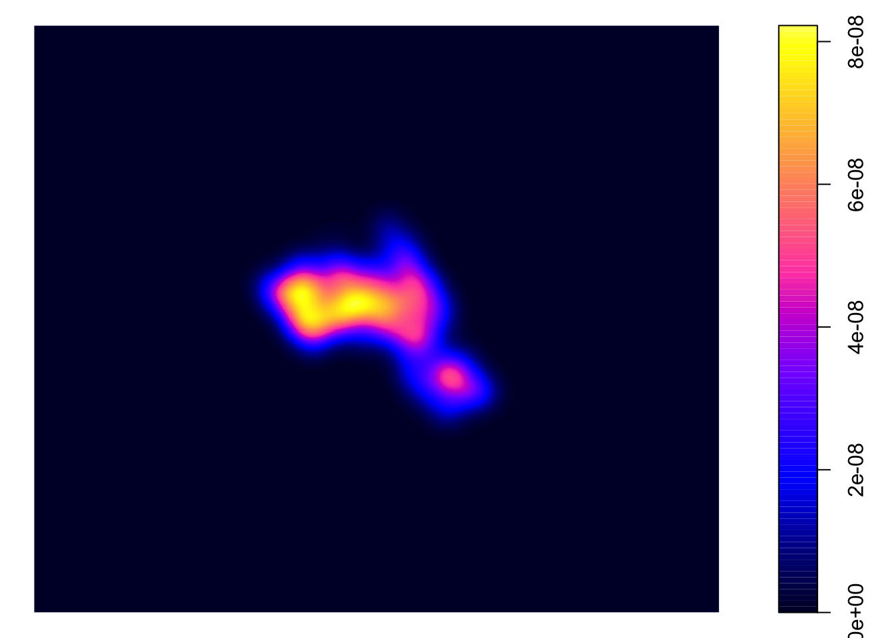
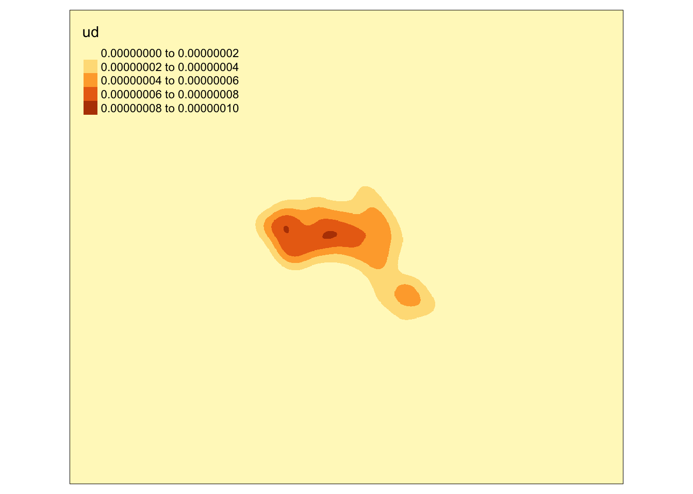
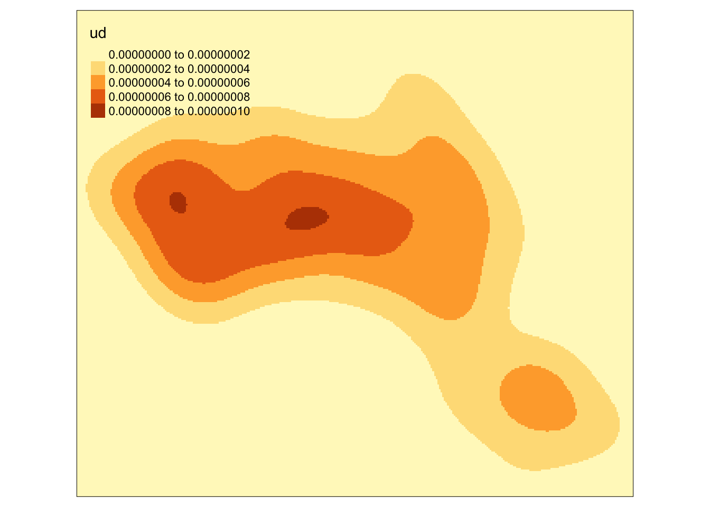
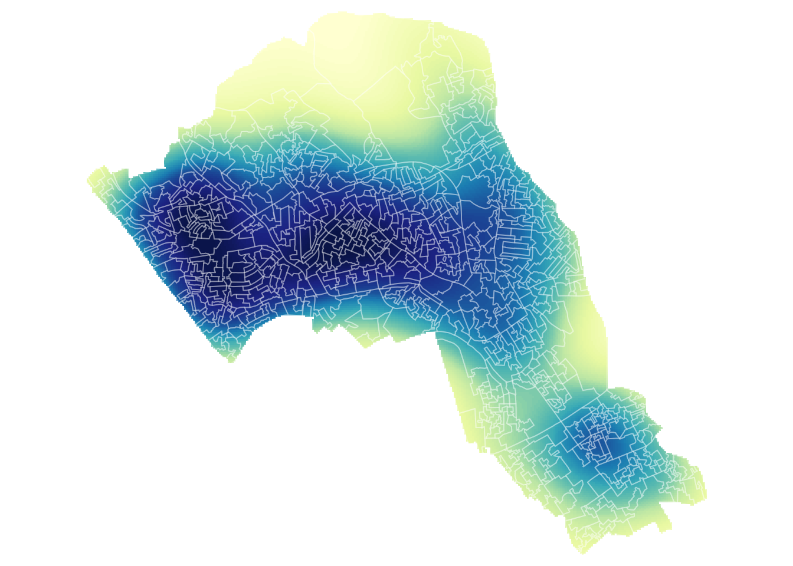
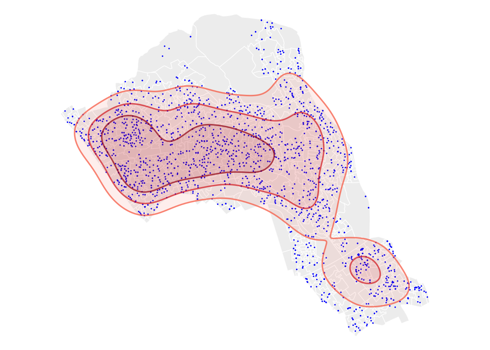

Lab 8. Points to Predictions
Overview
Research Question
Environment Setup
#setwd("~/Desktop/Lab8-CodeData")library(sf)
library(tmap)
library(leaflet)
library(raster) # Needed for grid and kernel density surface
library(adehabitatHR) # Needed for kernel density surfaceLoad and Join Data
Load non-spatial Data (csv)
Census.Data <-read.csv("practicaldata.csv")
head(Census.Data)## OA White_British Low_Occupancy Unemployed Qualification
## 1 E00004120 42.35669 6.2937063 1.893939 73.62637
## 2 E00004121 47.20000 5.9322034 2.688172 69.90291
## 3 E00004122 40.67797 2.9126214 1.212121 67.58242
## 4 E00004123 49.66216 0.9259259 2.803738 60.77586
## 5 E00004124 51.13636 2.0000000 3.816794 65.98639
## 6 E00004125 41.41791 3.9325843 3.846154 74.20635Load spatial Data (shapefile)
Output.Areas <- st_read("Camden_oa11.shp")## Reading layer `Camden_oa11' from data source `/Users/HIPark/Documents/micrometcalf/Intro2GIS/book/Camden_oa11.shp' using driver `ESRI Shapefile'
## Simple feature collection with 749 features and 1 field
## geometry type: POLYGON
## dimension: XY
## bbox: xmin: 523954.5 ymin: 180959.8 xmax: 531554.9 ymax: 187603.6
## CRS: 27700head(Output.Areas)## Simple feature collection with 6 features and 1 field
## geometry type: POLYGON
## dimension: XY
## bbox: xmin: 524326 ymin: 181181.1 xmax: 530660.2 ymax: 185111.2
## CRS: 27700
## OA11CD geometry
## 1 E00004527 POLYGON ((530648.4 181230.2...
## 2 E00004525 POLYGON ((530511.3 181531.2...
## 3 E00004522 POLYGON ((530207 181434, 53...
## 4 E00004287 POLYGON ((524355.4 185053.6...
## 5 E00004206 POLYGON ((528718.5 184565, ...
## 6 E00004200 POLYGON ((529332.4 181816.6...Join our census data to the shapefile
OA.Census <- merge(Output.Areas, Census.Data, by.x="OA11CD", by.y="OA")
head(OA.Census)## Simple feature collection with 6 features and 5 fields
## geometry type: POLYGON
## dimension: XY
## bbox: xmin: 526848.4 ymin: 184128 xmax: 527537.6 ymax: 185073.1
## CRS: 27700
## OA11CD White_British Low_Occupancy Unemployed Qualification
## 1 E00004120 42.35669 6.2937063 1.893939 73.62637
## 2 E00004121 47.20000 5.9322034 2.688172 69.90291
## 3 E00004122 40.67797 2.9126214 1.212121 67.58242
## 4 E00004123 49.66216 0.9259259 2.803738 60.77586
## 5 E00004124 51.13636 2.0000000 3.816794 65.98639
## 6 E00004125 41.41791 3.9325843 3.846154 74.20635
## geometry
## 1 POLYGON ((526998.5 184751.6...
## 2 POLYGON ((527159.1 184538.6...
## 3 POLYGON ((527260.6 184350.2...
## 4 POLYGON ((527230.5 184343.3...
## 5 POLYGON ((527439.8 185011.2...
## 6 POLYGON ((527427.2 185022.2...Load the house prices csv file
houses <- read.csv("CamdenHouseSales15.csv")
head(houses)## UID Price Date Street District Region
## 1 597034 22500000 6/12/15 0:00 AVENUE ROAD CAMDEN GREATER LONDON
## 2 594622 15200000 11/4/15 0:00 GREENAWAY GARDENS CAMDEN GREATER LONDON
## 3 594696 13500000 3/10/15 0:00 TEMPLEWOOD AVENUE CAMDEN GREATER LONDON
## 4 594592 10500000 9/14/15 0:00 CHURCH ROW CAMDEN GREATER LONDON
## 5 515677 8950000 10/30/15 0:00 THE GROVE CAMDEN GREATER LONDON
## 6 592992 8750000 9/1/15 0:00 ST GEORGES TERRACE CAMDEN GREATER LONDON
## Postcode oseast1m osnrth1m
## 1 NW86HS 527076 183790
## 2 NW37DJ 525813 185524
## 3 NW37XA 525779 186084
## 4 NW36UU 526159 185603
## 5 N66JU 528177 187307
## 6 NW18XH 527818 184013Inspect and Prepare Data
We only need a few columns for this practical
houses <- houses[,c(1,2,8,9)]
head(houses)## UID Price oseast1m osnrth1m
## 1 597034 22500000 527076 183790
## 2 594622 15200000 525813 185524
## 3 594696 13500000 525779 186084
## 4 594592 10500000 526159 185603
## 5 515677 8950000 528177 187307
## 6 592992 8750000 527818 184013create a House.Points SpatialPointsDataFrame using coordinates in columns 3 and 4
House.Points <- st_as_sf(houses, coords = c("oseast1m","osnrth1m"), crs = 27700)Plot to ensure the points were encoded correctly
plot(House.Points)
Check coordinate reference system, transform if needed.
st_crs(OA.Census) ## Coordinate Reference System:
## User input: 27700
## wkt:
## PROJCS["OSGB 1936 / British National Grid",
## GEOGCS["OSGB 1936",
## DATUM["OSGB_1936",
## SPHEROID["Airy 1830",6377563.396,299.3249646,
## AUTHORITY["EPSG","7001"]],
## TOWGS84[446.448,-125.157,542.06,0.15,0.247,0.842,-20.489],
## AUTHORITY["EPSG","6277"]],
## PRIMEM["Greenwich",0,
## AUTHORITY["EPSG","8901"]],
## UNIT["degree",0.0174532925199433,
## AUTHORITY["EPSG","9122"]],
## AUTHORITY["EPSG","4277"]],
## PROJECTION["Transverse_Mercator"],
## PARAMETER["latitude_of_origin",49],
## PARAMETER["central_meridian",-2],
## PARAMETER["scale_factor",0.9996012717],
## PARAMETER["false_easting",400000],
## PARAMETER["false_northing",-100000],
## UNIT["metre",1,
## AUTHORITY["EPSG","9001"]],
## AXIS["Easting",EAST],
## AXIS["Northing",NORTH],
## AUTHORITY["EPSG","27700"]]st_crs(House.Points)## Coordinate Reference System:
## User input: EPSG:27700
## wkt:
## PROJCS["OSGB 1936 / British National Grid",
## GEOGCS["OSGB 1936",
## DATUM["OSGB_1936",
## SPHEROID["Airy 1830",6377563.396,299.3249646,
## AUTHORITY["EPSG","7001"]],
## TOWGS84[446.448,-125.157,542.06,0.15,0.247,0.842,-20.489],
## AUTHORITY["EPSG","6277"]],
## PRIMEM["Greenwich",0,
## AUTHORITY["EPSG","8901"]],
## UNIT["degree",0.0174532925199433,
## AUTHORITY["EPSG","9122"]],
## AUTHORITY["EPSG","4277"]],
## PROJECTION["Transverse_Mercator"],
## PARAMETER["latitude_of_origin",49],
## PARAMETER["central_meridian",-2],
## PARAMETER["scale_factor",0.9996012717],
## PARAMETER["false_easting",400000],
## PARAMETER["false_northing",-100000],
## UNIT["metre",1,
## AUTHORITY["EPSG","9001"]],
## AXIS["Easting",EAST],
## AXIS["Northing",NORTH],
## AUTHORITY["EPSG","27700"]]Point Data Method: Basic Visualizations
This plots a blank base map, we have set the transparency of the borders to 0.4
tm_shape(OA.Census) + tm_borders(alpha=.4) 
Creates a color-coded dot map
tm_shape(OA.Census) + tm_borders(alpha=.4) +
tm_shape(House.Points) + tm_dots(col = "Price", palette = "Reds", style = "quantile") 
Rescale the points
tm_shape(OA.Census) + tm_borders(alpha=.4) +
tm_shape(House.Points) + tm_dots(col = "Price", scale = 1.5, palette = "Reds", style = "quantile", title = "Price Paid (£)") 
Turn on interactive Leaflet map view
tmap_mode("view")## tmap mode set to interactive viewingView interactive Map; in Export, Save as Web Page
tmap_mode("plot")## tmap mode set to plottingPoint Data Method: Graduate Symbol Visualizations
Creates a graduated symbol map
tm_shape(OA.Census) + tm_fill("Unemployed", alpha=0.8, palette = "Greys", style = "quantile", title = "% Unemployed") +
tm_borders(alpha=.4) +
tm_shape(House.Points) + tm_bubbles(size = "Price", col = "Price", palette = "PuRd", style = "quantile", legend.size.show = FALSE, title.col = "Price Paid (£)", border.col = "black", border.lwd = 0.1, border.alpha = 0.1) +
tm_layout(legend.text.size = 0.8, legend.title.size = 1.1, frame = FALSE)
Point Data Method: Buffer Generation
Create 200m buffers for each house point
house_buffers <- st_buffer(House.Points, 200)Map in tmap
tm_shape(OA.Census) + tm_borders() +
tm_shape(house_buffers) + tm_borders(col = "blue") +
tm_shape(House.Points) + tm_dots(col = "red") 
Point Data Method: Buffer Count per Area
Count buffers within each area; generates a vector of totals
count_buffers <- lengths(st_within(OA.Census, house_buffers))
head(count_buffers)## [1] 15 2 0 0 18 28Stick buffer totals back to the census master file
OA.Census <- cbind(OA.Census,count_buffers)
head(OA.Census)## Simple feature collection with 6 features and 6 fields
## geometry type: POLYGON
## dimension: XY
## bbox: xmin: 526848.4 ymin: 184128 xmax: 527537.6 ymax: 185073.1
## CRS: 27700
## OA11CD White_British Low_Occupancy Unemployed Qualification count_buffers
## 1 E00004120 42.35669 6.2937063 1.893939 73.62637 15
## 2 E00004121 47.20000 5.9322034 2.688172 69.90291 2
## 3 E00004122 40.67797 2.9126214 1.212121 67.58242 0
## 4 E00004123 49.66216 0.9259259 2.803738 60.77586 0
## 5 E00004124 51.13636 2.0000000 3.816794 65.98639 18
## 6 E00004125 41.41791 3.9325843 3.846154 74.20635 28
## geometry
## 1 POLYGON ((526998.5 184751.6...
## 2 POLYGON ((527159.1 184538.6...
## 3 POLYGON ((527260.6 184350.2...
## 4 POLYGON ((527230.5 184343.3...
## 5 POLYGON ((527439.8 185011.2...
## 6 POLYGON ((527427.2 185022.2...Map density of buffers per census area
tm_shape(OA.Census) + tm_fill(col = "count_buffers", palette = "BuGn", style = "quantile",title = "Housing Density")
Point Data Method: Buffer Union (or Dissolve)
Merge the Buffers
union.buffers <- st_union(house_buffers)Map Housing Buffers
tm_shape(OA.Census) + tm_borders() +
tm_shape(union.buffers) + tm_fill(col = "blue", alpha = .4) + tm_borders(col = "blue") +
tm_shape(House.Points) + tm_dots(col = "red") 
Point Data Method: Group Attribute by Area
Point in polygon. Gives the points the attributes of the polygons that they are in
pip <- st_join(House.Points, OA.Census, join = st_within)
head(pip)## Simple feature collection with 6 features and 8 fields
## geometry type: POINT
## dimension: XY
## bbox: xmin: 525779 ymin: 183790 xmax: 528177 ymax: 187307
## CRS: EPSG:27700
## UID Price OA11CD White_British Low_Occupancy Unemployed
## 1 597034 22500000 E00004771 46.77419 0.8547009 1.8264840
## 2 594622 15200000 E00004357 44.28571 7.6271186 1.3274336
## 3 594696 13500000 E00004345 48.54369 1.6528926 0.9090909
## 4 594592 10500000 E00004355 57.08812 5.7377049 1.5789474
## 5 515677 8950000 E00004495 72.26562 3.9682540 2.0833333
## 6 592992 8750000 E00004226 60.15625 1.6806723 1.5625000
## Qualification count_buffers geometry
## 1 50.40650 0 POINT (527076 183790)
## 2 71.25000 0 POINT (525813 185524)
## 3 55.10204 0 POINT (525779 186084)
## 4 55.20362 2 POINT (526159 185603)
## 5 65.19824 0 POINT (528177 187307)
## 6 69.71154 0 POINT (527818 184013)Aggregate average house prices by the OA11CD (OA names) column
OA <- aggregate(pip$Price, by = list(pip$OA11CD), mean)
head(OA)## Group.1 x
## 1 E00004120 1260000.0
## 2 E00004121 1215000.0
## 3 E00004123 2275000.0
## 4 E00004124 825859.0
## 5 E00004125 956333.3
## 6 E00004126 861428.6Change the column names of the aggregated data
names(OA) <- c("OA11CD", "Price")Join the aggregated data back to the OA.Census polygon
OA.Census <- merge(OA.Census, OA, by = "OA11CD", all.x = TRUE)Map mean housing price per area
tm_shape(OA.Census) + tm_fill(col = "Price", style = "quantile", title = "Mean House Price (£)")
Point Data Method: Group by Grid
Convert sf objects to sp objects for raster and adehabitate packages
OA.Census.sp <- sf:::as_Spatial(OA.Census)
House.Points.sp <- sf:::as_Spatial(House.Points)Make a Grid. First define boundaries or extent of grid
grid.extent <- extent(bbox(OA.Census.sp)) Next grade a raster object from the extent
grid.raster <- raster(grid.extent) Specify our dimensions; split extent into 30 x 30 cells
dim(grid.raster) <- c(50,50) Project the grid using our shapefile CRS
projection(grid.raster) <- CRS(proj4string(OA.Census.sp)) Convert into a spatial data frame
grid.sp <- as(grid.raster, 'SpatialPolygonsDataFrame') Convert spatial data frame to matrix data structure
grid.matrix <- grid.sp[OA.Census.sp,]## Warning in RGEOSBinPredFunc(spgeom1, spgeom2, byid, func): spgeom1 and spgeom2
## have different proj4 stringsAggregate housing prices by grid matrix
OA.grid <- aggregate(x=House.Points.sp["Price"], by=grid.matrix,FUN=mean)If there is a null value, assign 0
OA.grid$Price[is.na(OA.grid$Price)] <- 0Inspect data range
summary(OA.grid@data)## Price
## Min. : 0
## 1st Qu.: 0
## Median : 443502
## Mean : 636711
## 3rd Qu.: 888452
## Max. :13500000Map
tm_shape(OA.grid) + tm_fill(col = "Price", style = "quantile", n = 7, title = "Mean House Price (£)")  ## Point Data Method: Kernel Density Surface Runs the kernel density estimation; look up the function parameters for more options
## Point Data Method: Kernel Density Surface Runs the kernel density estimation; look up the function parameters for more options
kde.output <- kernelUD(House.Points.sp, h="href", grid = 1000)## Warning in kernelUD(House.Points.sp, h = "href", grid = 1000): xy should contain only one column (the id of the animals)
## id ignoredplot(kde.output)
Converts to raster
kde <- raster(kde.output)Sets projection to British National Grid
projection(kde) <- CRS("+init=EPSG:27700")Maps the raster in tmap, “ud” is the density variable
tm_shape(kde) + tm_raster("ud")
Creates a bounding box based on the extents of the Output.Areas polygon
bounding_box <- bbox(OA.Census.sp)Maps the raster within the bounding box
tm_shape(kde, bbox = bounding_box) + tm_raster("ud")
Mask the raster by the output area polygon
masked_kde <- mask(kde, Output.Areas)Maps the masked raster, also maps white output area boundaries
tm_shape(masked_kde, bbox = bounding_box) + tm_raster("ud", style = "quantile", n = 100, legend.show = FALSE, palette = "YlGnBu") +
tm_shape(Output.Areas) + tm_borders(alpha=.3, col = "white") +
tm_layout(frame = FALSE)
Compute homeranges for 75%, 50%, 25% of points, objects are returned as spatial polygon data frames
range75 <- getverticeshr(kde.output, percent = 75)
range50 <- getverticeshr(kde.output, percent = 50)
range25 <- getverticeshr(kde.output, percent = 25)The code below creates a map of several layers using tmap
tm_shape(Output.Areas) + tm_fill(col = "#f0f0f0") + tm_borders(alpha=.8, col = "white") +
tm_shape(House.Points) + tm_dots(col = "blue") +
tm_shape(range75) + tm_borders(alpha=.7, col = "#fb6a4a", lwd = 2) + tm_fill(alpha=.1, col = "#fb6a4a") +
tm_shape(range50) + tm_borders(alpha=.7, col = "#de2d26", lwd = 2) + tm_fill(alpha=.1, col = "#de2d26") +
tm_shape(range25) + tm_borders(alpha=.7, col = "#a50f15", lwd = 2) + tm_fill(alpha=.1, col = "#a50f15") +
tm_layout(frame = FALSE)
Write your kernel density surface to raster format
writeRaster(masked_kde, filename = "kernel_density.grd")## class : RasterLayer
## dimensions : 858, 1000, 858000 (nrow, ncol, ncell)
## resolution : 22.41141, 22.41141 (x, y)
## extent : 516573.8, 538985.2, 174652.8, 193881.8 (xmin, xmax, ymin, ymax)
## crs : +init=EPSG:27700 +proj=tmerc +lat_0=49 +lon_0=-2 +k=0.9996012717 +x_0=400000 +y_0=-100000 +datum=OSGB36 +units=m +no_defs +ellps=airy +towgs84=446.448,-125.157,542.060,0.1502,0.2470,0.8421,-20.4894
## source : /Users/HIPark/Documents/micrometcalf/Intro2GIS/book/kernel_density.grd
## names : ud
## values : 5.060993e-10, 8.224823e-08 (min, max)